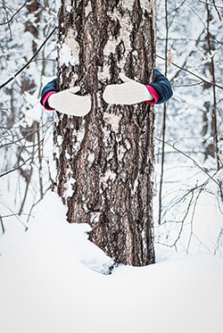

Winter in Ocean County brings chilly winds, frosty mornings, and sometimes heavy snowfall. While it may seem like trees are simply standing still, waiting for warmer days, they are actually undergoing critical changes to survive the season. The cold temperatures, shorter days, and occasional storms can put stress on trees, making them more vulnerable to damage. Ice and snow can weigh down branches, causing breakage, while fluctuating temperatures can lead to frost cracks in the bark. Even evergreen trees, which keep their foliage year-round, are at risk of winter burn due to dehydration. Understanding how trees react to winter conditions is essential for maintaining their health. At Ben Bivins Tree Experts, we provide expert Ocean County tree service to help trees withstand the harsh winter months and prepare for a strong comeback in spring. Let’s explore how winter affects trees and what can be done to protect them.
Cold Stress and Frost Cracking
Winter’s freezing temperatures can cause stress on tree bark, leading to frost cracks—long, vertical splits in the trunk caused by rapid temperature fluctuations. During the day, the sun warms one side of the tree, causing it to expand, and at night, sudden drops in temperature make it contract quickly, leading to cracking. Some trees, like maples and fruit trees, are particularly susceptible to this condition.
Winterburn on Evergreens
Unlike deciduous trees that shed their leaves, evergreens retain their needles year-round, making them vulnerable to winterburn. Cold winds and dry air can deplete moisture from the needles, causing them to brown and die. This is especially common in trees like arborvitae, pines, and boxwoods. A layer of mulch and occasional watering during dry periods can help mitigate this damage.
Root Damage from Freezing Soil
Tree roots remain active throughout the winter, but when soil freezes deeply, it can limit their ability to absorb water and nutrients. Younger trees and those with shallow root systems are more vulnerable. To protect roots, adding a layer of mulch before the first freeze can help insulate the soil and retain moisture.
Ice and Snow Load Damage
Heavy snowfall and ice accumulation can weigh down branches, leading to breakage. Certain trees, such as willows and birches, have flexible branches that may droop significantly under the weight. Proper pruning before winter and gently brushing off excess snow (without shaking branches, which can cause more damage) can help prevent breakage.
Animal Damage
During the winter months, food sources for wildlife become scarce, leading animals like deer, rabbits, and rodents to feed on tree bark and twigs. This can cause girdling, where the bark is stripped away in a circular pattern, potentially killing the tree. Wrapping tree trunks with burlap or plastic tree guards can protect against animal damage.
Winter Dormancy and Bud Protection
Trees enter dormancy in winter to conserve energy and protect themselves from extreme weather. Buds for spring growth are often protected by scales, but late winter thaws followed by sudden freezes can damage them. Choosing native and cold-hardy tree species can help minimize bud damage.

How to Help Trees Survive Winter- Apply Mulch: A layer of mulch helps insulate roots and retain moisture.
- Prune Wisely: Remove weak or damaged branches before winter to reduce the risk of breakage.
- Wrap Tree Trunks: Use burlap or tree guards to protect against frost cracks and animal damage.
- Water During Dry Spells: If the ground isn’t frozen, watering during dry winter months can prevent dehydration.
Winter can be tough on trees, but with the right care and precautions, they can endure the season and emerge strong in the spring. If you’re concerned about the health of your trees this winter, consider reaching out to a professional tree care service to assess and protect your landscape.
Protecting Your Trees Through Winter and Beyond
Winter can be tough on trees, but with the right care, they can emerge stronger when spring arrives. Proper mulching helps insulate roots from freezing temperatures, while strategic pruning can prevent branches from breaking under the weight of snow and ice. For young or sensitive trees, wrapping them in burlap can provide extra protection from harsh winds and frost. Additionally, watering trees before the ground freezes ensures they have enough moisture to sustain them throughout the season. If you’re unsure how to care for your trees this winter, professional guidance can make all the difference. Our Ocean County tree service specialists are here to help, whether it’s winter pruning, tree health assessments, or emergency tree care after a storm. Don’t wait until damage occurs—contact us today for expert tree care that keeps your landscape safe, healthy, and beautiful all year long.